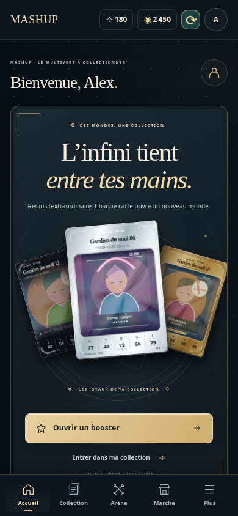
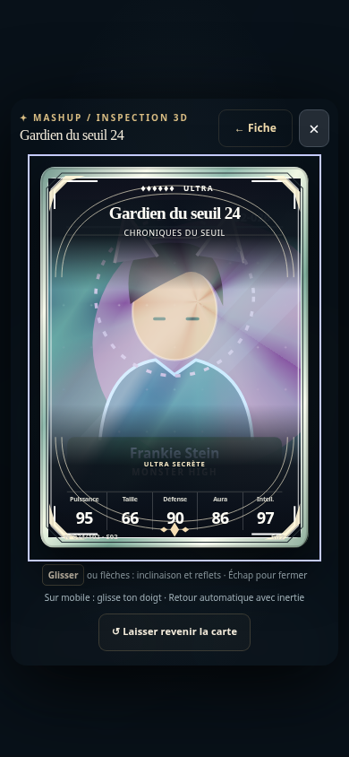
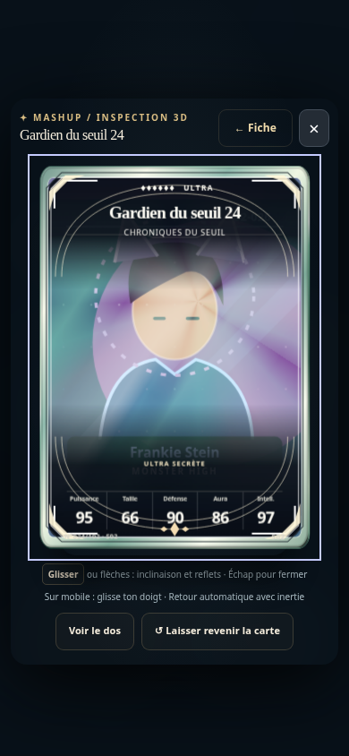
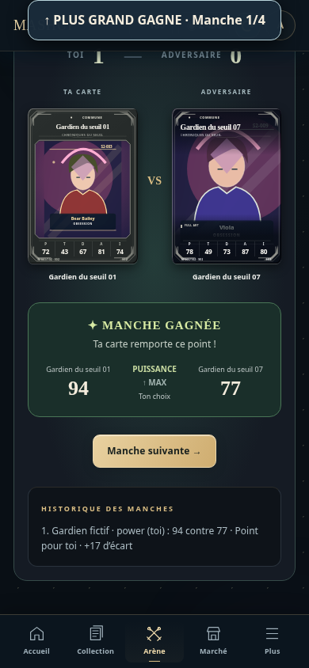
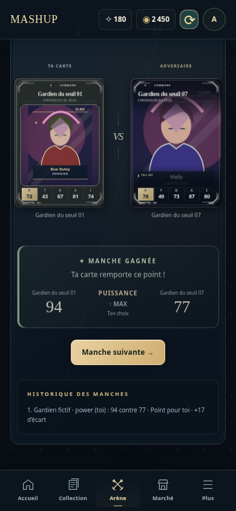
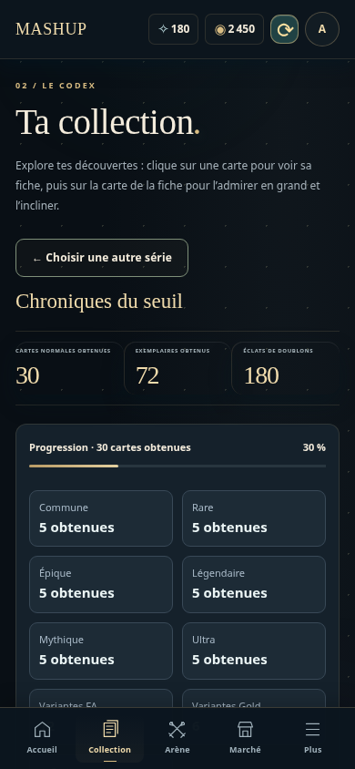
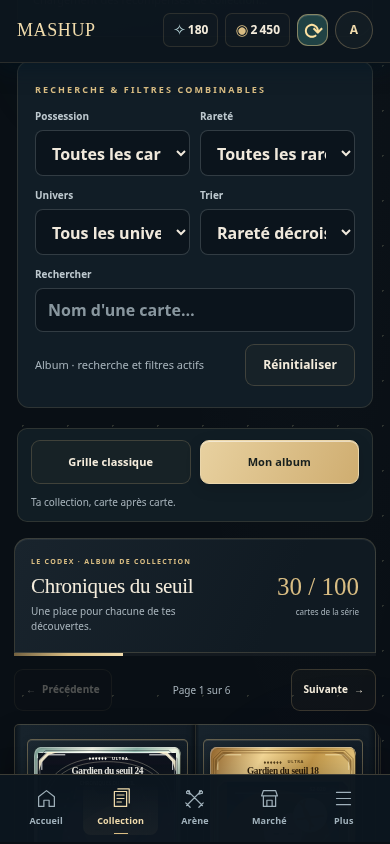

Captures réelles de Chromium, mêmes cartes fictives et même fenêtre390×844. RéférenceV14 :18f8d14. Aucune donnée de joueur.







Linux headless. Ces captures ne constituent pas un test sur téléphone physique.